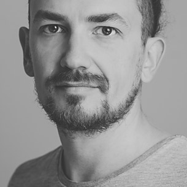
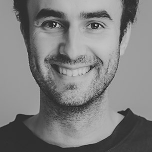

Looking for top-notch Ruby and JavaScript programmers?
Choose world-class developers with impressive open-source record. Choose
direct communication over managemental overhead. Choose paying for actual
work done.
Cut off all the fat. Choose Rebased.
The Team
Imanel
Bernard Potocki
Open-source contributor since high school (C++ times). Ruby and JS developer since 2008, he still maintains a massive open-source portfolio.
Tomash
Tomasz Stachewicz
Ruby developer since 2005, went pro in 2007. Likes less-popular languages, especially D. Founder of Warsaw Ruby Users Group.
Chastell
Piotr Szotkowski
Professional Ruby developer for fun, assistant professor at Warsaw University of Technology by passion – or the other way around. Awesome at both.
Zły
Krzysztof Białek
Psychologist who prefers working with code over other people minds. Besides Ruby he specializes in Android apps and responsive CSS.
Sarniak
Łukasz Sarnacki
Ruby and Javascript professional, Łukasz likes unusual databases (Neo4j, Postgis) and contributes to Rails, Travis-CI and other OS projects.
Turbo
Katarzyna Turbiasz-Bugała
Rails Girls alumnae, Katarzyna uses her years of experience as a researcher to quickly become a great Ruby developer.
Ravbaker
Rafał Piekarski
Worked for a decade as professional rubyist, with experience including information retrieval systems, concurrent programming and JRuby.
Yeti
Kamil Grabowski
Devops expert (Ansible, Docker) who codes in Ruby since 2008 after his share of x86 assembler, C and PHP.
Monika
Monika Glier
Web developer with a knack for algorithms and data structures. Judgemental about code, in a good way.
Idengager
Kasia Jarmołkowicz
Rails Girls organiser and activist. Switched from microbiology to microcomputer programming.
Nathell
Daniel Janus
Wrote x86 assembler in Clojure. Keeps in touch with mortals by professionally programming in Ruby and Javascript.

Martinciu
Marcin Ciunelis
Experienced Ruby developer by day, at night contributes to open-source (since 2008), blogs about coding, runs and hikes in the mountains.
K3rni
Krzysztof Zych
10 years of experience spanning from C to Python to Ruby, still experimenting with new languages. Undercover unix neckbeard and amateur drummer.
Frey
Kasia Frey
Yet another physicist in the team, she is a real frontend shieldmaiden.
Gajewsky
Marcin Gajewski
Brewer of high quality code. Likes working with big data sets and distributed architectures.

Rafał
Rafał Brize
Expert in javascript, ecommerce and integrations with even the worst kinds of APIs.
Jumski
Wojciech Majewski
Self-taught developer with extensive experience, great Ruby skills, soft spot for clojure and programming sound synthesizers.
Hodor
Hodor The Cat
Ever saw a cat contributing to open-source projects? Now you have!
Kala
Kamila Wyroślak
"Programmers and programming projects are easy to take care of when you have experience with freight ships being on fire in the middle of an ocean."
Żywiec
Łukasz Rzewuski
Bullshit Manager
Projects
Large e-commerce site integrated with external ERP system.
Enterprise SEO Analytics provider, processing gigabytes of data every day.
High-profile conference: public site and backoffice app integrated with CRM and ticketing systems.
Construction site management with issue tracking and notification, integrated with blueprints.
Loyalty program backend for gas stations network.
Company resource analytics for internal (HR) and external (sales) use.
Open Source
Ruby on Rails
The framework that doesn't need introduction, used by us in most of the projects.
Travis CI
Continuous integration loved by open-source community. That includes us!
Active Admin
Currently our favourite tool for quickly creating administration backends in Rails applications.
Ruby-Websocket
Maintained by Imanel, it's probably the best Ruby gem for handling websocket connections, downloaded over 6M times.
Spree
The e-commerce Rails engine we all love to work with (and contribute to).
Community
WRUG
Warsaw Ruby Users Group was founded in 2008 by our own Tomash and Mike Lee and remains one of the largest regular Ruby developers meetup with 40-60 developers attending each meetup.
Rails Girls
Sponsored and supported by Rebased since the first edition of Rails Girls Warsaw, we are commited to sustaining and growing this great initiative, not only in Warsaw edition. Besides sponsoring and coaching, Chastell and Tomash wrote the new Rails Girls programme and became coaches of Rails Girls Summer of Code teams that work in Warsaw.
Trainings
Rebased history dates back to free Ruby on Rails workshops that Tomash pioneered since 2008 at Warsaw University of Technology where they met with Imanel. Being practitioners with everyday use of taught technologies and strong theoretical background, we teach and train programmers in the most effective way that allows them to proceed further with expanding their skills while possessing deep understanding of used tools (languages, libraries, frameworks).
Now We Can Work With You.
Rebased sp. z o.o.
ul. Edwarda Jelinka 48,
01-646 Warszawa
Poland